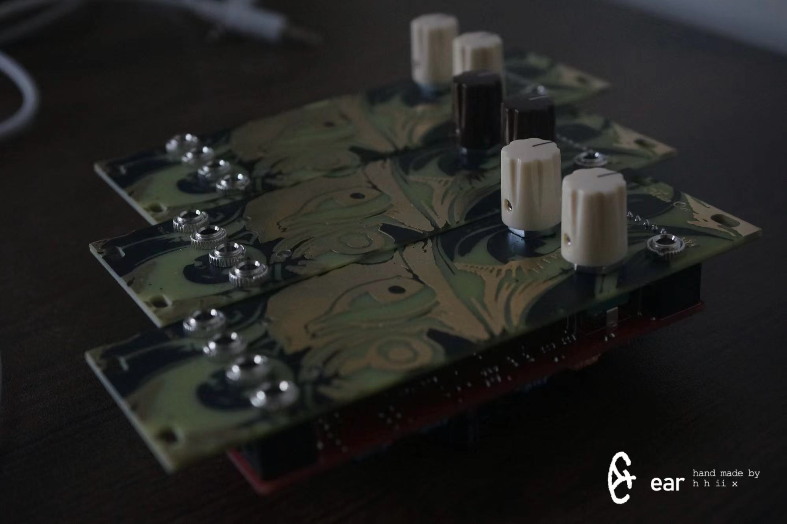
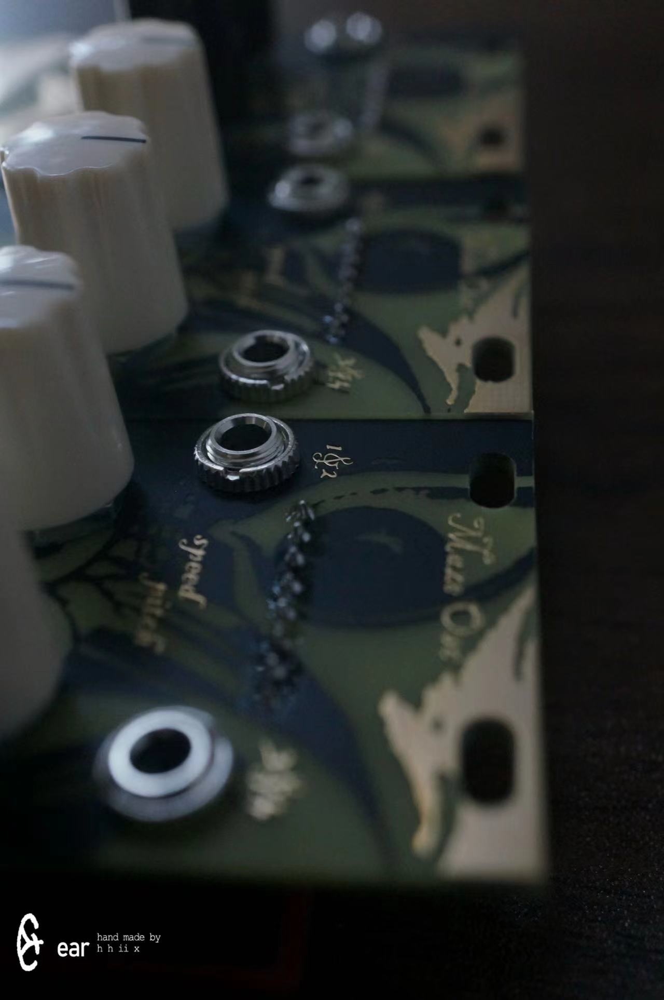
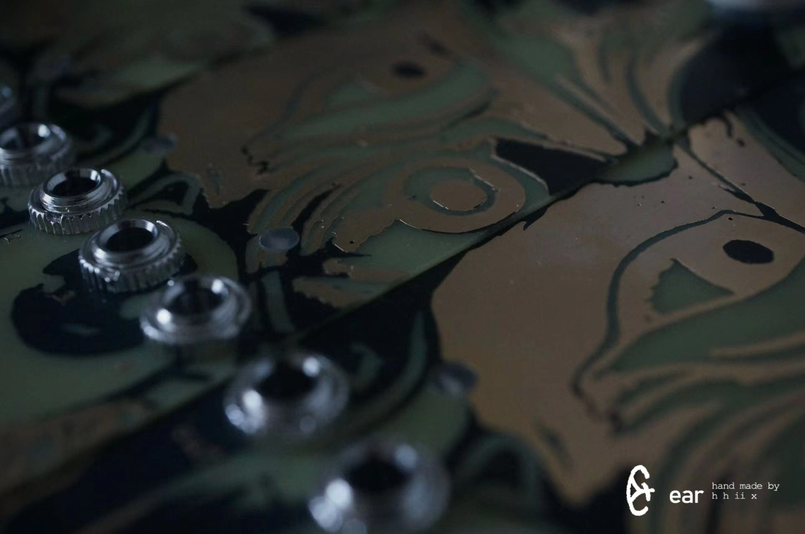
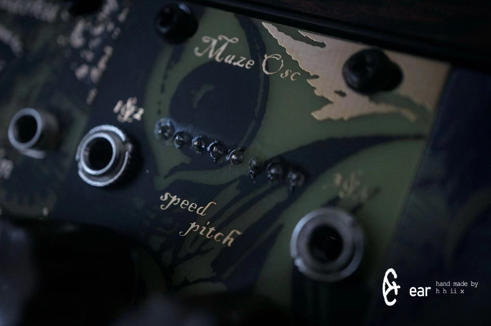
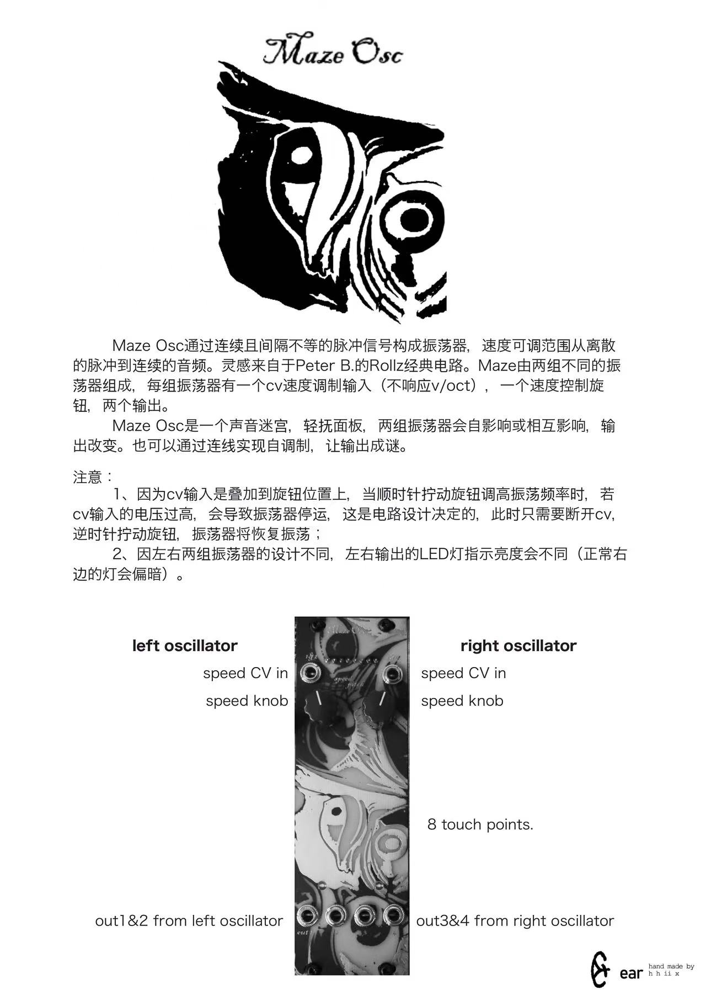
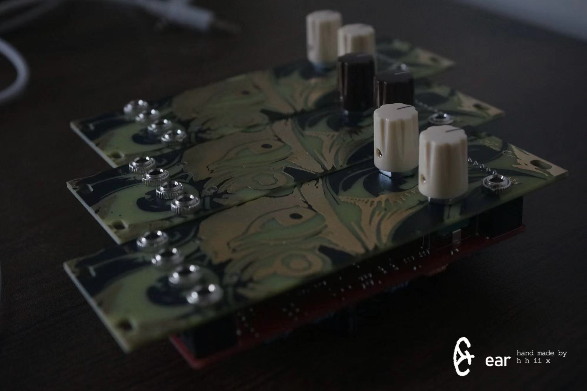
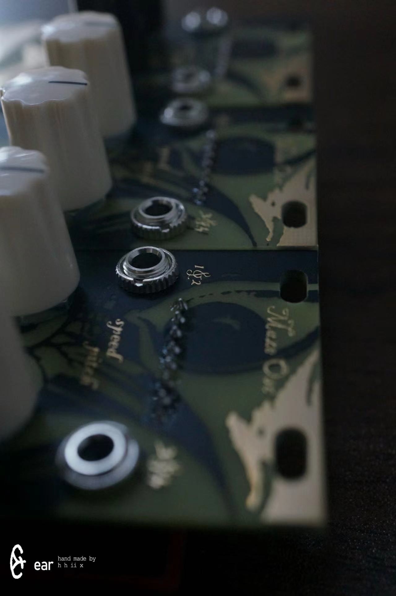
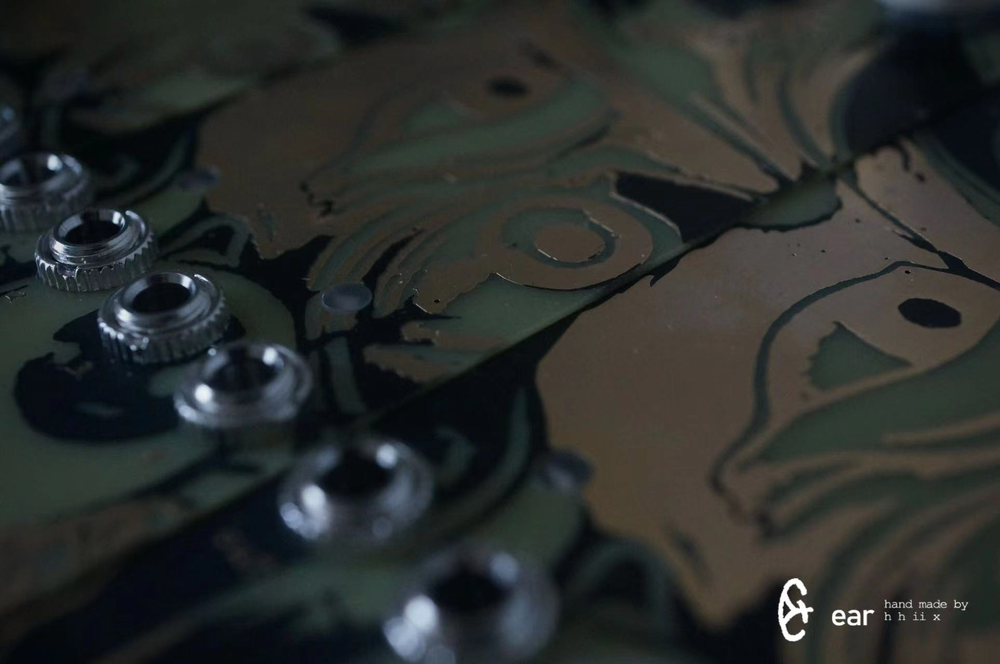
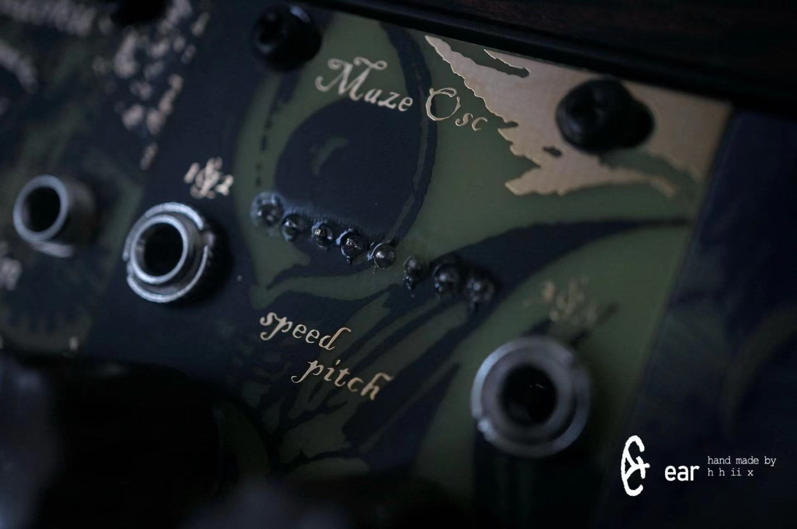
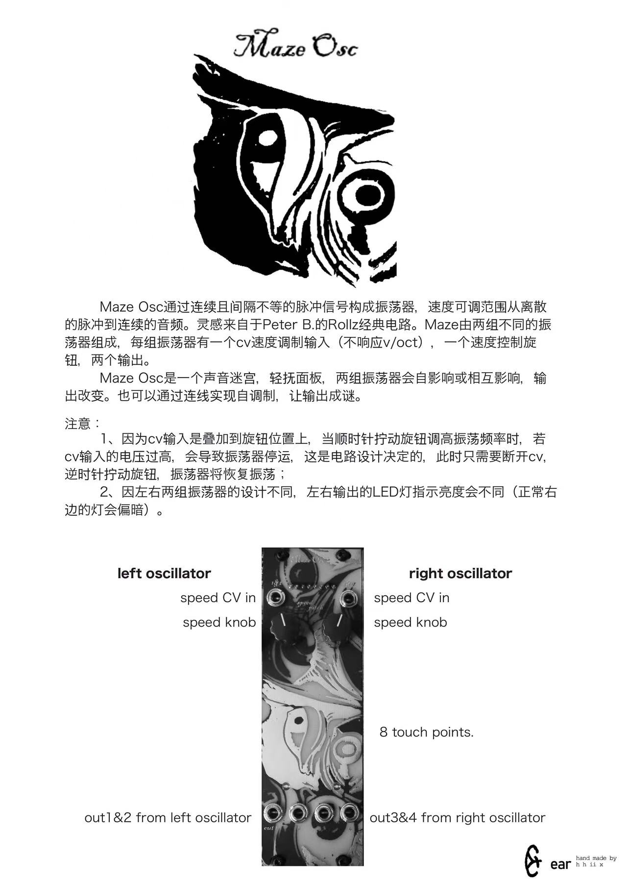

Maze Osc是一个可触摸的脉冲振荡器
频率从离散的信号到声音范围
速度可cv控制
两组振荡器各有两个相位不同的输出
两组振荡器可通过触摸面板图案相互调制
脉冲信号不是等间隔排列是它的特色
Maze Osc不支持v/oct
Frequency range: From discrete signals to audio frequencies.
Speed is CV-controllable.
Two oscillators, each with two outputs of different phases.
The touch panel pattern can be used to modulate the two oscillator groups.
Its distinctive feature is that the pulse signals are not evenly spaced.
It does not support V/Oct.
Maze Osc
 








